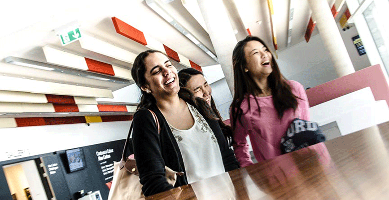
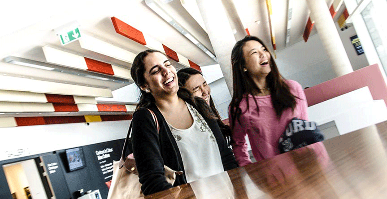
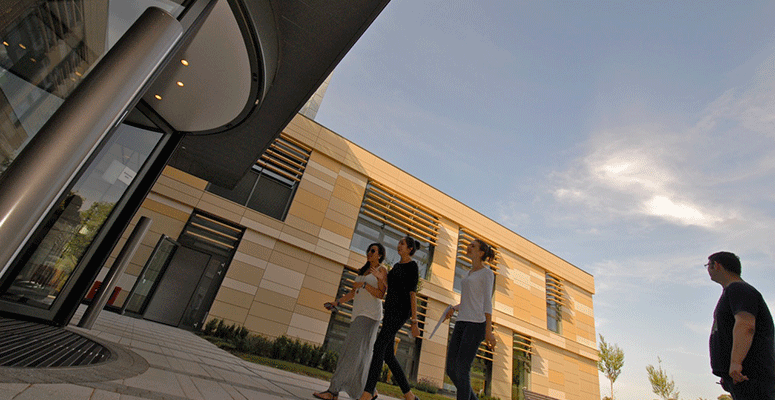
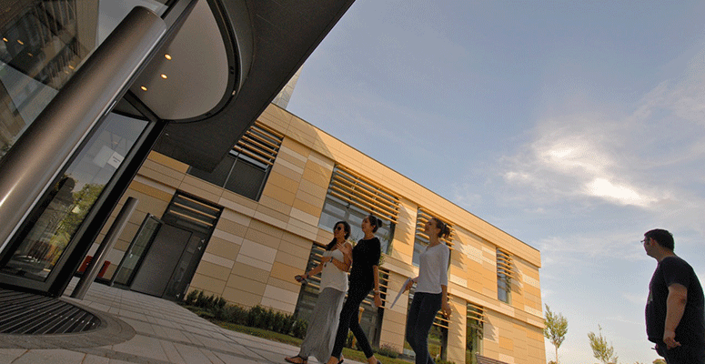

 

 {% endblock %}
{% block centerblock %}
{% endblock %}
{% block centerblock %}
Taking a step back, reflecting on the big picture and articulating your life goals whilst living on 4 university campuses. Advice is provided by higher education experts and thriving professionals from different organisations who share their own inspiring career paths and tips to success.
Identifying an issue in any field and developing a solution. Students are mentored by professionals to develop their solution and present it to a panel.
Problem-solving, teamwork, flexibility, communication, innovation and creativity are developed!
At the heart of GPS! We tour famous sights of London including Big Ben, Tower of London and Buckingham Palace. We also spend a day in Oxford, an afternoon in Lacock (where Harry Potter was filmed), play croquet and lots more!